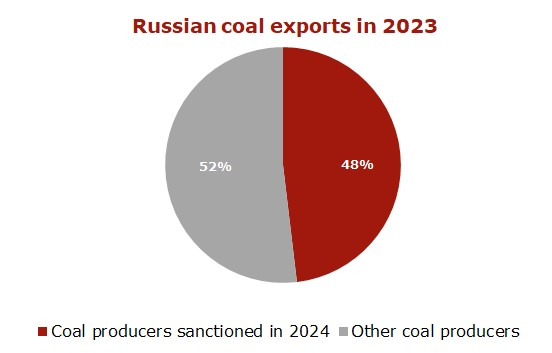

US keeps tightening sanctions against Russian coal industry
by — 6 days ago — Reading Time: 2 mins read

The US Treasury Department keeps extending blocking sanctions against Russian coal producers by
adding to the SDN list in August 2024 the following companies:
1. Evraz units, including Yuzhkuzbassugol, as well as Raspadskaya, which shares are traded on the
Moscow Exchange. Evraz has been under UK sanctions since 2022;
2. Mechel Mining and its affiliated coal companies Southern Kuzbass and Yakutugol. Other Mechel’s
entities have already been under US sanctions since February 2024;
3. SDS Group and its affiliates;
4. Stroyservis Group and its affiliates.
Earlier this year, such coal producers as SUEK, Mechel (except for Mechel Mining), Sibanthracite, Elga,
Coalstar and Razrez Mairykhsky were placed on the sanctions list. The blocking sanctions also apply to
the companies’ related mining, coal preparation, transportation and port assets.
The tougher sanctions will further reduce Russian coal exports in both 2024 and 2025. The new curbs cover 10% of Russia’s coal export volumes, and given the previously imposed blocking sanctions, about 50% of exports are now subject to the US restrictions. Because of threats of secondary sanctions and payment issues, Russian suppliers will have to cut coal shipments to the Asia-Pacific, especially to South Korea and Taiwan.
Blocking sanctions against Russian coal companies lead to imbalance in global supply and demand for high-quality coal, both thermal and metallurgical, including PCI and anthracite. The lost volumes of high-quality Russian coal and metallurgical material will not be replaced in the market, as production from Indonesia, South Africa and Colombia is not comparable in quality, while there is limited capacity to boost production in Australia. So, this may push up key indices, calculated on the basis of 6,000 kcal/kg material, as well as prices for coking coal, PCI and anthracite.

The limited throughput capacity of the BAM and Trans-Siberian Railway hinders the growth of transshipment volumes in Far Eastern ports, where logistics is most favorable for shipments to Asia-Pacific markets due to lower freight rates.
The mix of current low prices with high rail transportation costs and handling rates in ports makes export supplies unprofitable, forcing Russian coal companies to suspend export deliveries, reduce production and, in some cases, shut down mining facilities and curtail projects at new coal deposits.
In 2023, Russian coal exports decreased to 212.2 mio t (-2.5 mio t or -1.2% vs. 2022). In January-July 2024, export shipments plunged to 116.6 mio t (-11.6 mio t or -9% y-o-y).
Source: CCA Analytics